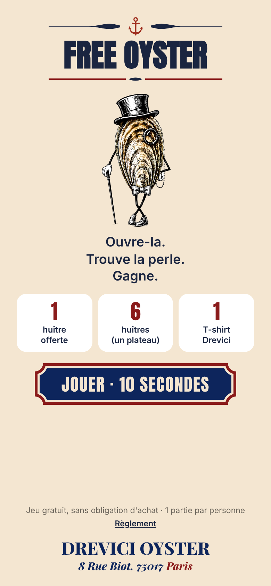
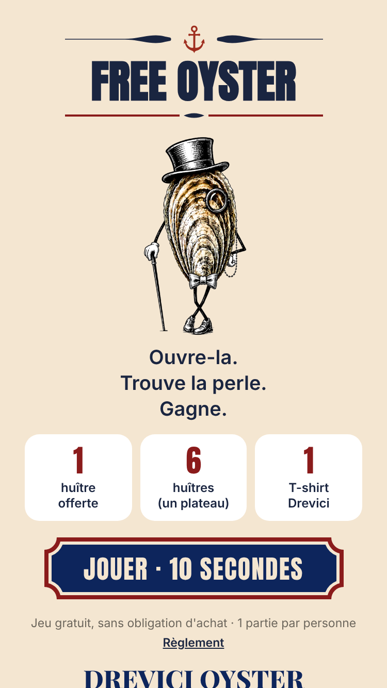
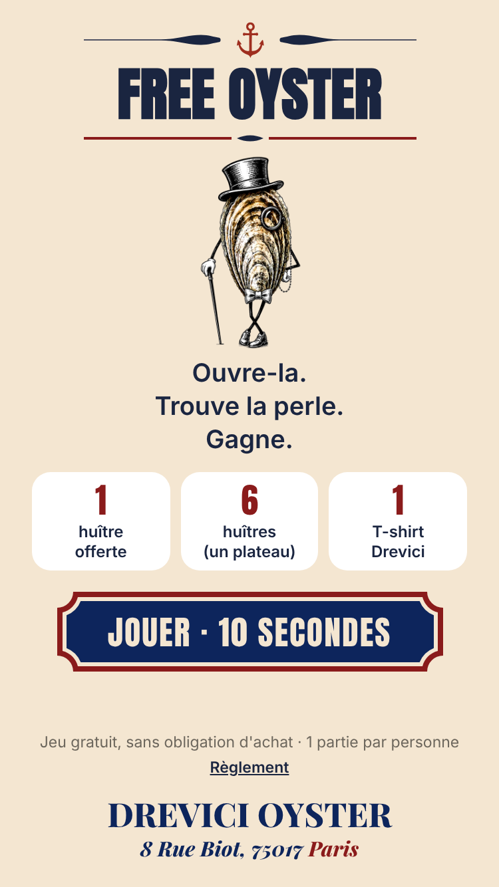
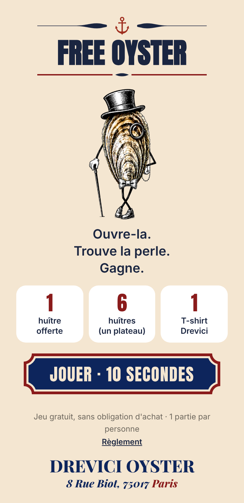

Accueil du jeu · accroche sur 3 lignes

iPhone 14 / 15 · 390×844
Tout tient, sans défiler
iPhone SE, tel quel · 375×667
Dépasse de 46 px
iPhone SE, ajusté · 375×667
Tout tient, sans défiler
Android courant · 360×740
Tout tient, sans défiler